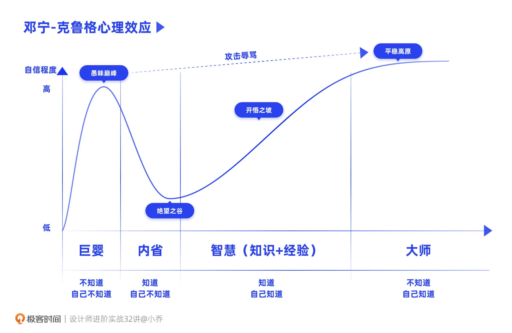

- 00 开篇词 为什么中间件对分布式架构体系来说这么重要？.md.html
- 01 中间件生态（上）：有哪些类型的中间件？.md.html
- 02 中间件生态（下）：同类型的中间件如何进行选型？.md.html
- 03 数组与链表：存储设计的基石有哪些？.md.html
- 04 红黑树：图解红黑树的构造过程与应用场景.md.html
- 05 多线程：多线程编程有哪些常见的设计模式？.md.html
- 06 锁：如何理解锁的同步阻塞队列与条件队列？.md.html
- 07 NIO：手撸一个简易的主从多Reactor线程模型.md.html
- 08 Netty：如何优雅地处理网络读写，制定网络通信协议？.md.html
- 08 加餐 中间件底层的通用设计理念.md.html
- 09 技术选型：如何选择微服务框架和注册中心？.md.html
- 10 设计原理：Dubbo核心设计原理剖析.md.html
- 11 案例：如何基于Dubbo进行网关设计？.md.html
- 12 案例：如何实现蓝绿发布？.md.html
- 13 技术选型：如何根据应用场景选择合适的消息中间件？.md.html
- 14 性能之道：RocketMQ与Kafka高性能设计对比.md.html
- 15 案例：消息中间件如何实现蓝绿？.md.html
- 16 案例：如何提升RocketMQ顺序消费性能？.md.html
- 17 运维：如何运维日均亿级的消息集群？.md.html
- 18 案例：如何排查RocketMQ消息发送超时故障？.md.html
- 19 案例：如何排查RocketMQ消息消费积压问题？.md.html
- 20 技术选型：分布式定时调度框架的功能和未来.md.html
- 21 设计理念：如何基于ZooKeeper设计准实时架构？.md.html
- 22 案例：使用分布式调度框架该考虑哪些问题？.md.html
- 23 案例：如何在生产环境进行全链路压测？.md.html
- 大咖助阵 高楼：我们应该如何学习中间件？.md.html
- 用户故事 学而时习之，不亦乐乎.md.html
- 用户故事 愿做技术的追梦人.md.html
- 用户故事 浪费时间也是为了珍惜时间.md.html
- 结束语 坚持不懈，越努力越幸运.md.html
- 捐赠
用户故事 浪费时间也是为了珍惜时间
你好，我是苜蓿，目前是一名 Java 后端开发，已经工作四年了。
首先非常感谢《中间件核心技术与实战》的课程编辑邀请我分享学习经历和心得，当然更要感谢丁威大佬的这门课程，让我收获了很多知识。
我的学习方法跟别人可能不太一样。经过了一年多的摸索，我逐渐掌握了“浪费时间学习法”的要义，今天就来跟你分享一下我的经历和思考。
改变：从绝望之谷到开悟之坡
记得两年前，我还在教育行业，当时我所在的公司开始收回在线业务模块，刚巧新冠疫情袭来，我就进入了疯狂加班模式。当时我的工作范围让人有点迷惑，说是在开发吧，好像也没在写代码。每天都在处理一线问题和一线业务沟通协调，紧急解决生产问题。几乎每周要进行压测，疯狂熬夜。不知道你有没有类似的工作状态。
后来公司业务调整，我就去了另外一个部门。新部门业务量逐渐大起来，又恰逢负责这个项目的架构师离职，还赶上暑假报名，我又进入了疯狂熬夜的状态。
那时候我是挺焦虑的，应该是开始进入邓宁 - 克鲁格心理效应里的绝望之谷了吧，这还是从小乔老师的课上学到的概念，附上一张小乔老师给出的图片供你参考一下。

这个阶段我迷茫过，也很焦虑，不过它也给了我必须做出改变的动力。孔子说：吾十有五而志于学，但其实我是到了这时候才有了志于学的想法。
学习：要敢于“浪费时间”
我一口气买了很多课程（Java 训练营、云原生训练营，算法训练营，还有文字版课程），算是给自己一些心理安慰。浑浑噩噩算是学完了 Java 训练营，这时候心里对后端算是有谱了。哦，原来我需要的是这些框架上的东西（计算机相关基础、Java 基础、中间件、微服务、云原生）。其实这些内容在公司里每天都能见到，只是自己之前没留心。
这就是我一开始说的“浪费时间学习法”。听起来不太靠谱，其实意思就是，要接受迷茫，花时间去探索不同的知识，找到不同知识的交叉点。
虽然学得多难免忘得也多，但时间久了我们脑海中的知识结构会越来越清晰。搭建起自己的学习网络之后，我们就能有针对性地再慢慢去深挖了。落实到具体的操作呢，就是“单点攻破 + 多点涉猎”。
今年二三月份，因为教育行业的现状，我换了公司。这时候我的心态已经趋于平和了，知道自己要干嘛，也知道自己缺少哪些知识，于是我开始有计划、有阶段地安排学习。
第一阶段我重新学习了一遍计算机基础相关的东西，包括基础、网络、组装三剑客，中间穿插着学习 MySQL、Redis。
但是这段时间学得还是很累，不懂的也好多，于是又难以避免地浪费了一些时间。我开始重新思考是不是应该专攻某一点，然后稍微穿插学一些其他领域的东西。比如产品、设计、项目等。
所以我第二阶段的计划是学习算法，一边学习一边认真总结，同时也穿插着学点 JVM，不过不花主要精力，只看不实操。就这么学习完了线性结构、树形结构，又开始学常用的高阶结构，这时候我慢慢有点上道的感觉了。原来树结构和 MySQL 底层有关系，红黑树是这样“玩”的，丁威老师这门课原来也和 Dubbo 有关系。感觉自己的知识体系慢慢建立起来，知识点正在交叉成网。
我其实是打算把中间件放在第三阶段，和微服务框架一起穿插学习的。这方面我还没有全方位展开，所以丁老师这门课我暂时没有全部学完。但我也看了基础篇还有和公司业务相关的一些章节。
比方说，实战篇里，老师谈到了服务网关设计。其实我们公司现在也有一个项目是要解决三方对接问题的。
我们的业务背景是要对接全国各省各市的监管部门，要进行业务数据上报和数据监管。和老师的项目一样，业务比较复杂，省有省的规范，市有市的标准，并没有统一规则。最难受的是有些业务只能使用内网。因为我们还不了解公司目前如何对接内网，所以还没找到解决方案，仍然是沿用之前比较笨重的方式。使用了签名接口、配置化数据抽取（包括 XXL 定时上报）。学了老师的课程，我感觉还可以加更多东西适配起来。
回顾我的学习历程，好像就是在浪费和走弯路里慢慢前进的。一开始学东西肯定不能一下就理解透彻，那只是电影里才有的情节。不要担心学不懂搞不定，有些事，就是要浪费时间才能慢慢找到通路的。
写在最后
现在的我还是有很多知识不会，但是我已经不像前几年那么迷茫了。我还自己创建了一个算法链接，记录自己的学习成果。也希望自己快点学完基础知识，进入到下一个学习环节，我会把在专栏中学到的知识都总结下来，放到评论区里。
“吾十有五而志于学”的下面几句是，“三十而立，四十而不惑”，丁威老师 2010 年在传统行业工作，2017 年去到和互联网高度相关的物流行业，七年的时间已经立了起来，我们也要多读书多学习，早点立起来。
最后许个愿吧，希望老师出个中间件常见疑难杂症和优化的课程，把中间件常见的问题总结一下，这样我们在后面遇到问题时，就可以在专栏中按图索骥了。丁威老师的公众号“中间件兴趣圈”也是个宝藏，推荐你关注起来。
我们求学路上见。
© 2019 - 2023 Liangliang Lee. Powered by gin and hexo-theme-book.